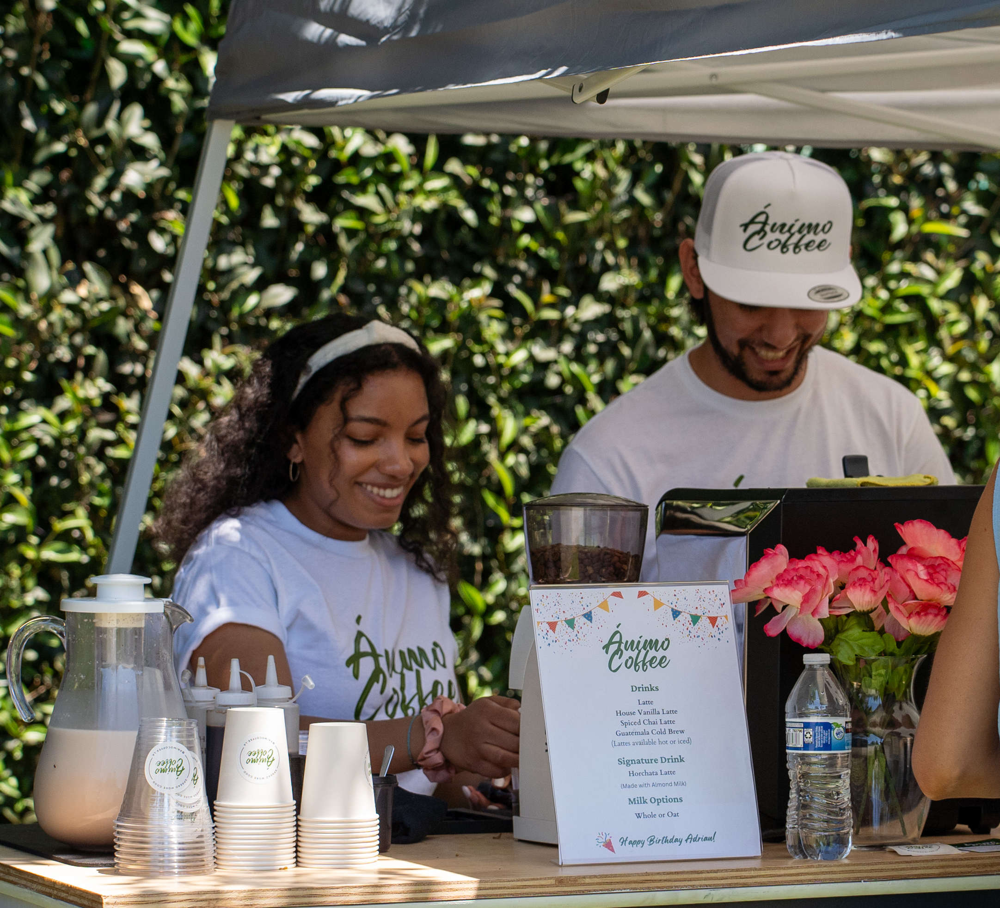
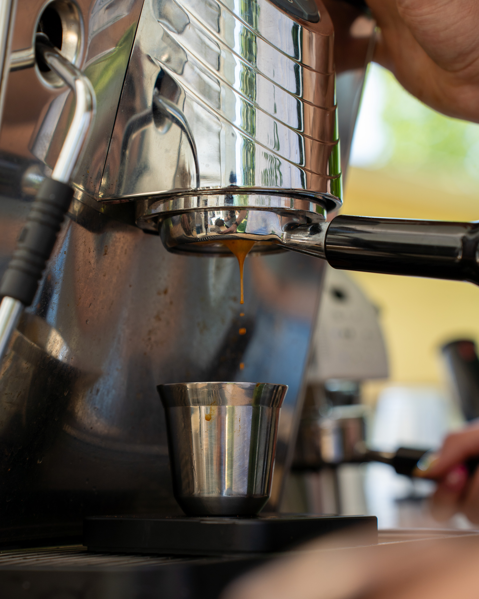
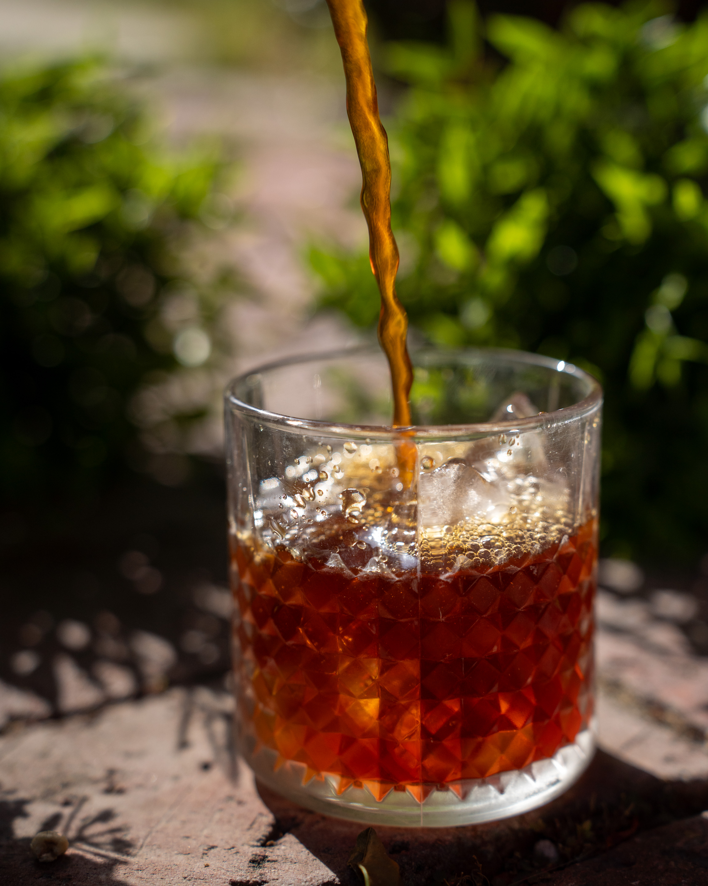
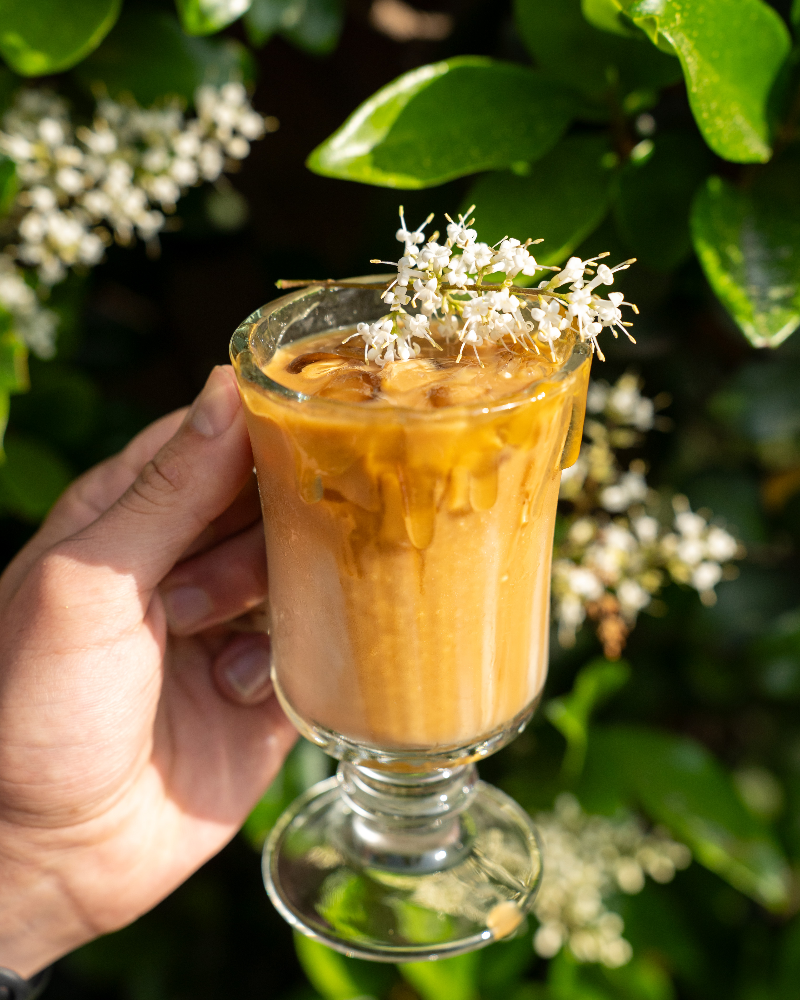
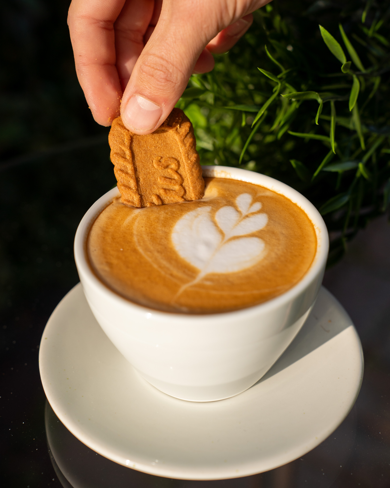
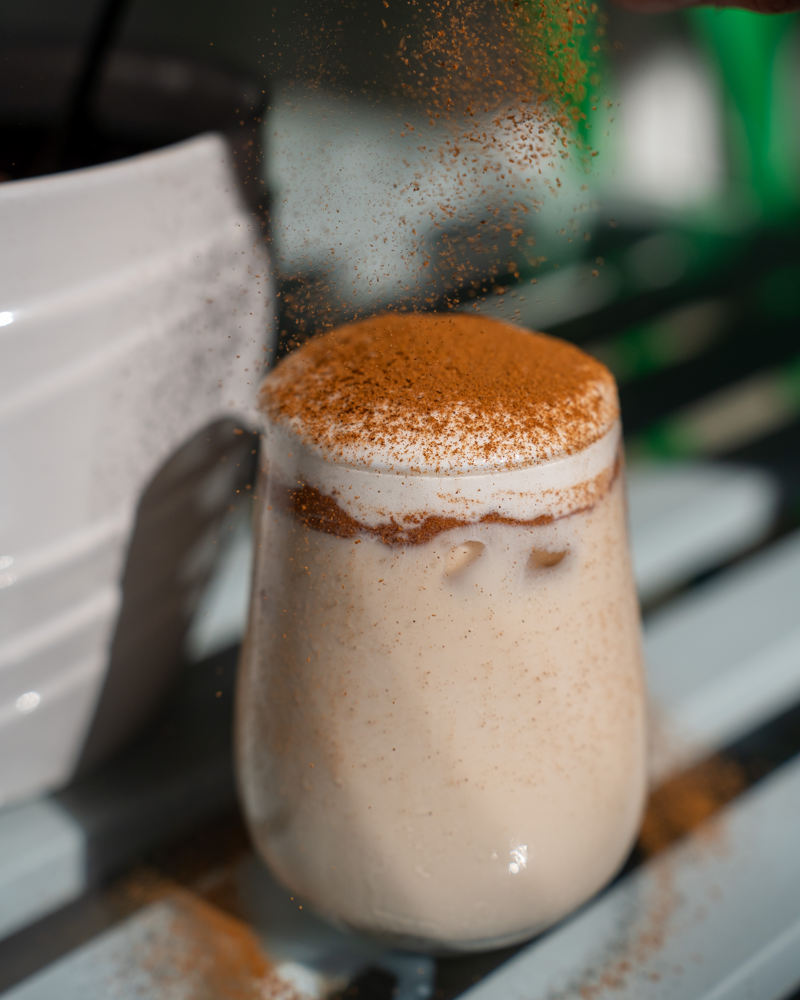
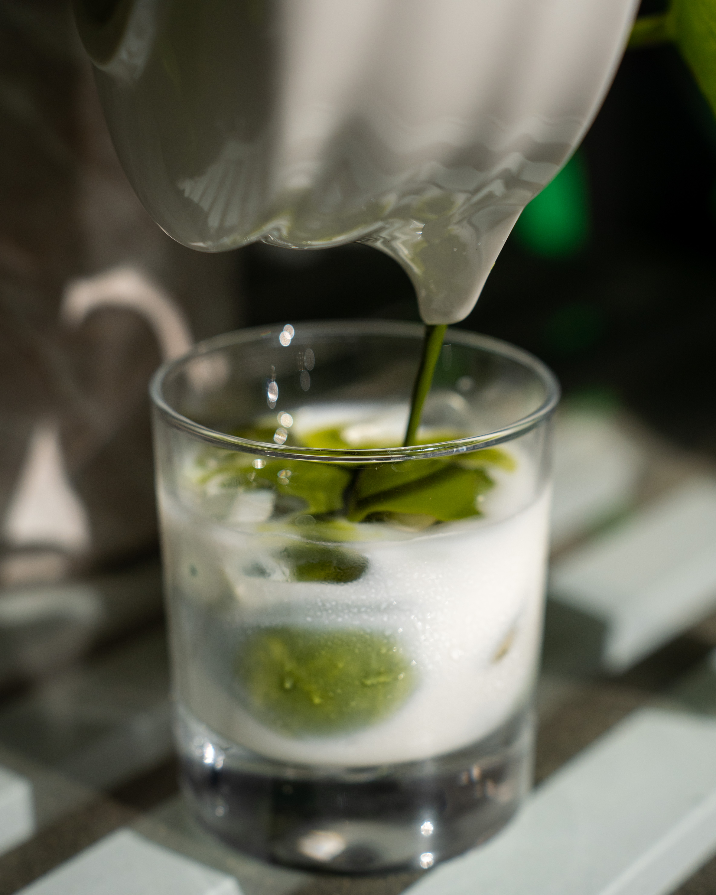
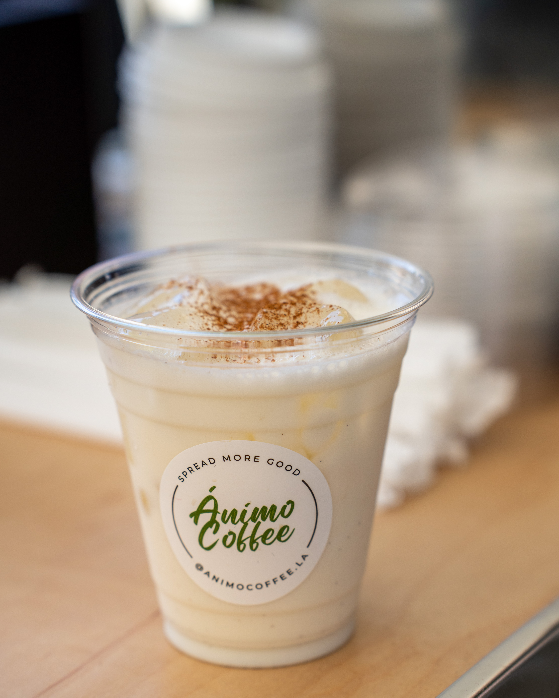
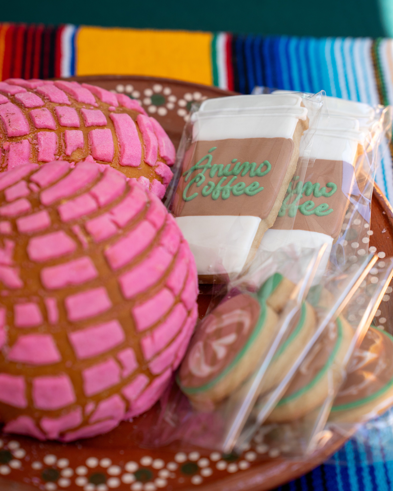

Ánimo coffee aims at spreading more good through specialty coffee. Backed by professional barista experience, Ánimo coffee is committed to providing café level quality beverages at any event.


About Us
In Spanish, Ánimo describes the spirit of inspiration and encouragement. Its purpose is to uplift others and spread joy. From a handcrafted cart, to vendor sourcing, Ánimo Coffee operates with intent as we humbly set out on our path to brick and mortar. All throughout this journey, we believe in the spirit of Ánimo to keep ourselves centered and the community at the forefront.
Menu
Our catering menu is curated to offer options ranging from espresso, to lattes, both hot and iced.
We offer house-made vanilla and honey syrups to flavor any drink as well as hot chocolate.
We believe in making moments unique and special for others, including your guests, so we offer the option of collaborating on a beverage that’s unique for your event.

Guatemala Cold Brew

Wildflower Honey Latte

Caffe Latte

Chai Latte

Japanese Matcha Latte

Horchata Latte

FAQ
What is "specialty coffee"?
Specialty coffee can consistently exist through the dedication of the people who have made it their life's work to continually make quality their highest priority. Specialty coffee exists beginning with the farmer, green coffee buyer, roaster, barista and consumer.
What is your pricing?
Pricing is based on estimated guest count, location and duration of your event.
Our minimum service time is 2 hours. Contact us for a quote!
What events do you serve?
We specialize in catering for events of up to 80 people, including corporate gatherings, weddings, parties, and more. Our mobile setup allows us to bring the coffee experience directly to your venue with exceptional quality.
How far in advance do I need to book your service for an event?
We recommend booking 3 weeks in advance to ensure availability. However, we understand things come up last minute, so feel free to contact us and we’ll do our best to accommodate your needs.
What are your operating hours?
Our hours vary depending on the event schedule and location. We strive to be flexible and can adjust our hours to suit your event's needs.
What does the host need to provide?
One dedicated circuit and a crowd!
Are your beans ethically sourced?
Yes, we are committed to sourcing our beans from reputable suppliers who prioritize ethical and sustainable practices.
Who roasts your coffee?
New Home Coffee is our supplier for roasted beans. Headed by Arabica Q-Grader and small batch roaster, David Martinez, New Home Coffee has been in operation since 2023.
Can we customize the coffee bar?
We believe in collaboration, and if customizing the cart is important to you, we want to help your vision come alive. Together, we can see what we can accommodate.
How much space does the coffee bar take up?
The cart is 5’x2.5’, so about 6’x6’ working space is ideal.
What kind of equipment do you bring to events?
Our mobile setup includes professional-grade espresso machines, grinders, brewing equipment, and all the necessary tools to create high-quality coffee beverages on-site. We ensure that our equipment is well-maintained and up to industry standards